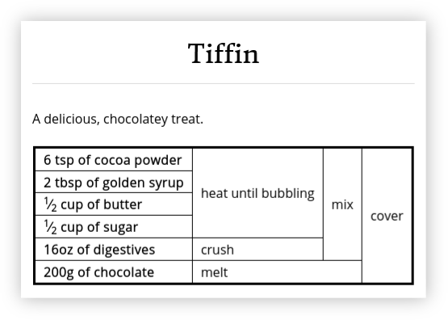

Recipe Grid¶
Recipe Grid is a collection of standalone utilities and also a Python library for describing recipes in a tabular form, as illustrated by the following (rather tasty) recipe below for tiffin:
These recipes have several advantages over traditional recipe descriptions:
Recipes are typically more concise.
Ingredients and method are shown together so no need to cross-reference between the two.
Parts of the method are never “hidden” in an ingredients list (e.g. ‘1 onion, finely chopped’)
Opportunities to reorder steps or do them in parallel (or not!) are easy to spot while still providing a suggested order.
Recipes are described in Markdown files using a convenient to write recipe description language. For example, the recipe above was generated from the following Markdown:
Tiffin
======
A delicious, chocolatey treat.
6 tsp of cocoa powder
2 tbsp of golden syrup
1/2 cup of butter
1/2 cup of sugar
16oz of digestives
200g of chocolate
cover(
mix(
heat until bubbling (cocoa powder, golden syrup, butter, sugar),
crush(digestives)
),
melt(chocolate)
)
Using Recipe Grid¶
The best place to get started is with the Recipe Grid tutorial:
Once you’ve made it through the tutorial, the following reference documentation covers the remaining details of the recipe grid language and command line tools.
The recipe_grid Python Library¶
Recipe Grid also provides a limited, stable(ish) Python API for parsing and rendering recipes.
Recipe Compilation¶
Recipe Grid provides APIs for compiling recipes embedded in Markdown files
(using the API in recipe_grid.markdown) or directly from recipe
description language sources (see recipe_grid.compiler).
Recipe Data Structure¶
Recipe’s are parsed into Recipe data structures
which form the Recipe Grid data model. These structures abstractly describe the
Directed Acyclic Graph (DAG) which defines a recipe.
Recipe Rendering¶
The recipe_grid.renderer module provides a framework for converting
recipes into tabular form and then rendering these into a desired output
format. This may be used to build alternative renderers for recipes.
Sphinx Recipe Grid Extension¶
Finally, a Sphinx extension is provided for embedding recipes within Sphinx documentation.